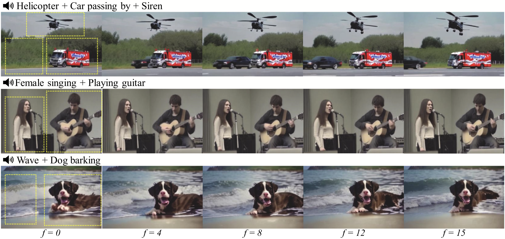
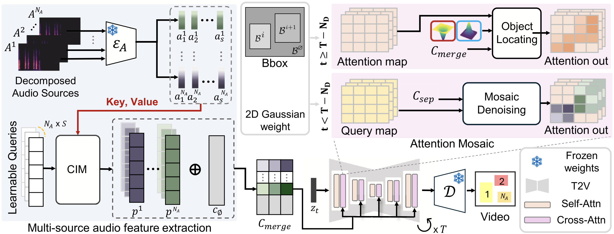
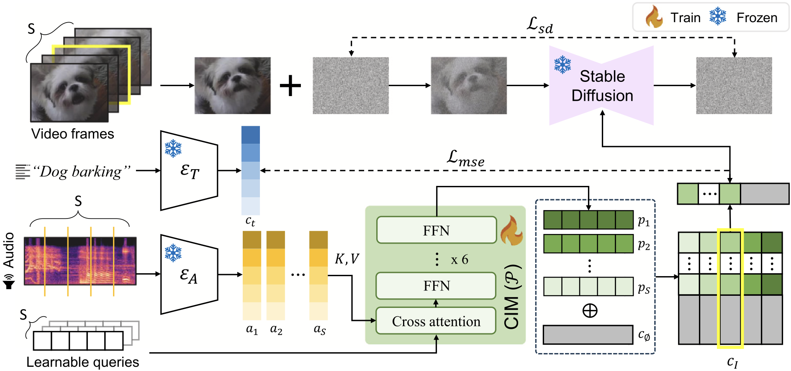
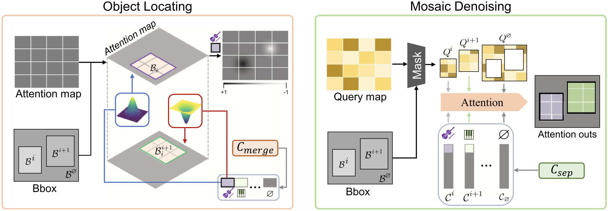
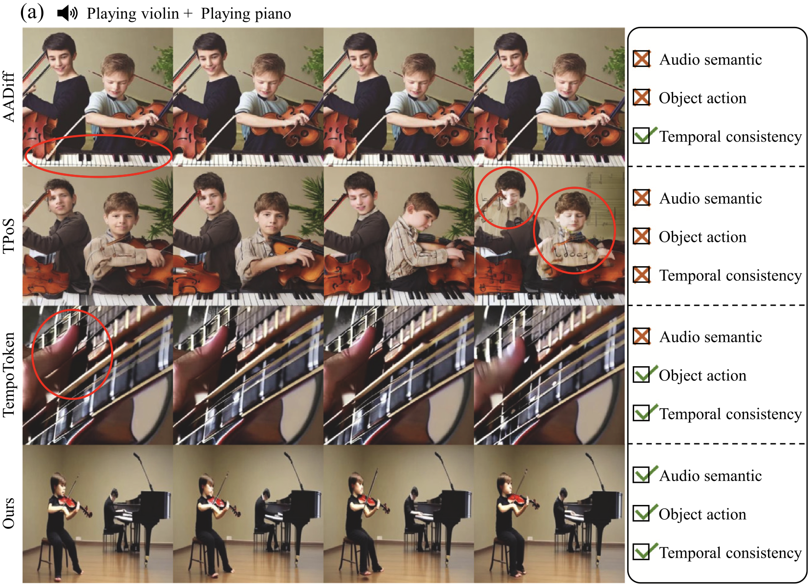
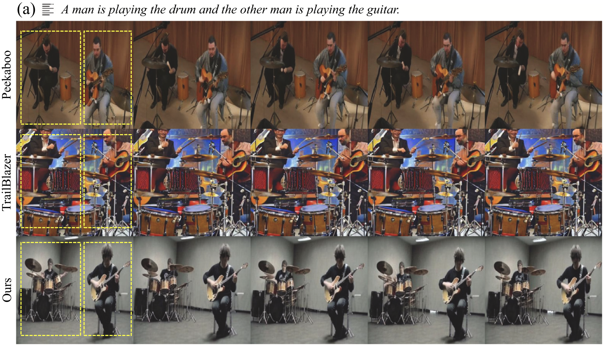
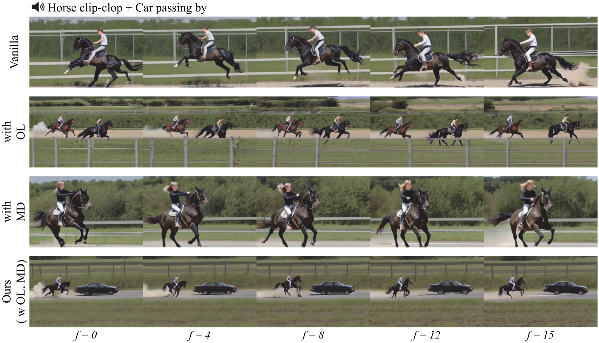
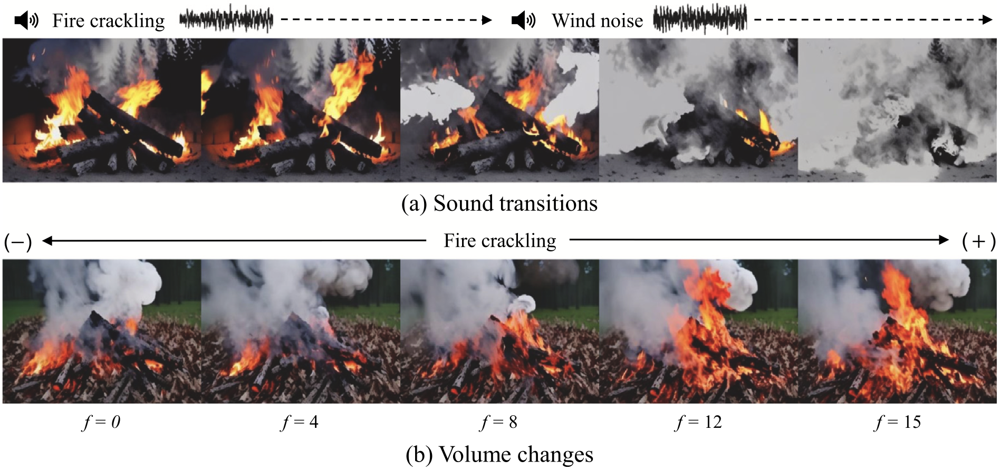

Semantically Complex Audio to Video Generation with Audio Source Separation
Engineering Applications of Artificial Intelligence (EAAI, JCR IF Top 10%), 2025

Maestro generates videos that fully reflect semantically complex, multi-source audio, naturally expressing multiple distinct objects at designated spatial regions.
TL;DR
We present Maestro, a novel multi-source audio-to-video generation framework that incorporates decomposed audio sources into video generative models. Real-world audio consists of mixed sources, causing existing models to struggle with capturing all semantics. Our proposed Attention Mosaic directly maps each decomposed audio feature to its corresponding spatial attention region, ensuring accurate object placement and rendering. A Condition Injection Module (CIM) further produces natural contexts involving non-audible objects by leveraging the spatial prior knowledge of Stable Diffusion. Extensive experiments demonstrate state-of-the-art performance in both multi- and single-source audio-to-video generation tasks.
Key Contributions
- Audio Source Decomposition — Addresses the limitation of existing audio-to-video methods by decomposing mixed audio sources via AudioSep to accurately capture multiple semantics, enabling faithful multi-object video generation.
- Attention Mosaic for Spatial Control — Object Locating (2D Gaussian weighting) and Mosaic Denoising (masked spatial attention) directly map each audio source to its designated region, vastly enhancing instance-level audio-visual alignment.
- Pixel-Level Context Optimization — The CIM is pre-trained using Stable Diffusion's denoising loss alongside MSE, achieving superior contextual expression of non-audible background objects beyond contrastive learning alone.
Project Design

Overview of Maestro. The model consists of two main components: (i) Multi-source audio feature extraction, producing time-dependent audio tokens via the Condition Injection Module, and (ii) Attention Mosaic, directly mapping each audio feature to its designated spatial location in the video diffusion model.
1. Condition Injection Module (CIM)

Audio input is divided into segments and processed through an audio encoder and CIM. By employing a Stable Diffusion denoising loss (λ₁ = 0.9) along with MSE, CIM learns video frame information corresponding to each audio segment, enabling natural expression of background and non-audible contexts.
2. Attention Mosaic

At timestep t, noise is predicted via either Object Locating — using a 2D Gaussian weight function to place each object within its bounding box — or Mosaic Denoising — masking query maps so each audio condition exclusively attends to its designated region, ensuring fine-grained object separation and quality.
Experiments
Comparison with Audio-to-Video Baselines

Compared to AADiff, TPoS, and TempoToken, Maestro excels in representing semantically complex audio — maintaining object action fidelity and temporal consistency even with overlapping sound sources.
| Method | FVD ↓ | IA ↑ | AV-Align ↑ |
|---|---|---|---|
| AADiff | 2151.8 | 0.30 | 0.30 |
| TPoS | 2314.1 | 0.23 | 0.43 |
| TempoToken | 1912.8 | 0.38 | 0.52 |
| Maestro (Ours) | 585.9 | 0.48 | 0.58 |
Evaluated on VGGSound. User study (100 participants) confirmed Maestro rated highest in realism, semantic alignment, temporal consistency, and overall quality.
Comparison with Text-to-Video Baselines

Against multi-object text-to-video models (Peekaboo and TrailBlazer), Maestro achieves superior visual separation, accurate bounding-box placement, and natural object interactions.
Ablation: Attention Mosaic

Without Object Locating (OL) or Mosaic Denoising (MD), the model merges multiple audio conditions or fails to separate objects. Combining both produces perfectly separated, stable outputs.
Dynamic Sound Responsiveness

(a) Sound transitions visually shift from a crackling fire to extinguishing wind. (b) Volume changes alter the visual intensity and size of the generated fire — demonstrating dynamic audio responsiveness.
Hyperparameter Tuning

Ablation of timestep divider ND (λ₃). A value of 6 balances clear object positioning (OL) and generation quality (MD).

Optimizing loss weight λ₁. Setting λ₁ = 0.9 (90% denoising loss) significantly improves contextual rendering over pure MSE.
Conclusion
We proposed Maestro, a novel multi-source audio-to-video generation pipeline that accurately produces multiple distinct objects by decomposing mixed audio via AudioSep. The Attention Mosaic technique ensures objects are precisely placed and rendered with fine detail, while the Condition Injection Module enables natural expression of non-audible background objects. Extensive experiments demonstrate state-of-the-art performance on both multi-source and single-source audio-to-video generation. Future work will focus on handling more complex soundscapes, extending to longer video sequences, and broadening the range of generable object categories.
Acknowledgement
This research was supported by the Culture, Sports and Tourism R&D Program through the Korea Creative Content Agency (KOCCA), and the Institute of Information & Communications Technology Planning & Evaluation (IITP) funded by the Korean government (MSIT).